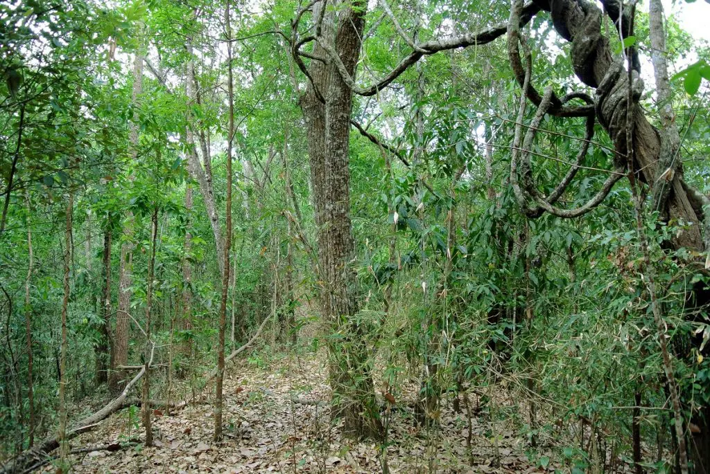
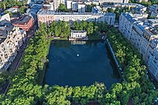
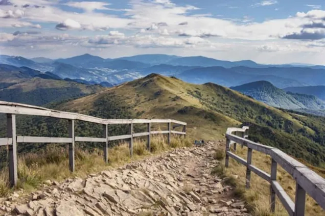

Разнообразие природных образований - леса, водоём, гор.
Дополнительнуюинформацию по теме можно найти на бесплатных сайтах:
- 1. Типы лесов.
- 2. Виды водоёмов.
- 3. Разновидность гор.
Типы лесов.
Классификациялесов довольно сложна, поскольку существует множество переменных, позволяющих их дифференцировать. Одним из основных критериев, используемых для дифференциации типов леса, является климат и широта. Леса различаются в зависимости от климата, широты, листвы, периода созревания, вмешательства человека и его воздействия, а также вмешательства, которое в них существует. Давайте анализирвать разные типы.
У нас есть эти типы лесов, известные также под названием тайга. Это те леса, которые находятся в северной части планеты и представляют собой более холодные лесные районы. Его температура колеблется от максимум 20 градусов до+ минимума -60 градусов зимой. Это обширные регионы, которые занимают часть различных стран, среди которых мы находим Аляска, Швеция, Норвегия, Канада, Финляндия и Россия.
Субтропические леса. Они несколько теплее со средней температурой 22 и близки к тропической зоне. Растительность обычно намного крупнее и с широкими листьями. Он выделяется большим количеством осадков и очень четкими сезонами года. Здесь есть сосновые леса, лиственные, субтропические джунгли и субтропические сухие леса.
Определение: Леса разделяются по его листьям: вечнозеленый природных вечнозеленый лес: это те, у которых есть вечнозеленые листья. Эти листья хранятся круглый год. Лиственный лес: это лиственный лес, и это означает, что в одно время года они опадают, а в другое время снова дают ростки.
Виды водоёмов.
Вода – одно из основных условий для жизни, и не важно, для кого или чего. Цветы и деревья, птицы и животные и даже мы с вамибез воды выжить не сможем. Не зря водоемы занимают большую часть планеты Земля. Многие дачники также мечтают о небольшом прудике на своем участке, чтобы быть ближе к природе. А знаете ли вы, что океан — тоже водоем, только очень большой? Сегодня мы кратко поговорим о том, какие бывают водоемы и чем они отличаются!
Водоёмы это все водные объекты, независимо от их величины, которые образуются в разных по размерах углублениях на суше. В зависимости от вида водоемов в них полностью отсутствует природных движение воды или жеоно очень замедлено и непостоянно. Водоемы могут быть природными (образованные в результате природных явлений) и искусственными (созданные человеком).
К природным водоемам относятся:океан море; озера; большие пруды. Река тоже является природным водоемом но, поскольку имеет постоянное течение, принадлежит к водотокам. Озера могут быть пресными или солеными, если они заполнены стоячей водой и на дне накапливаются минеральные отложения. А вот вода в природных прудах – всегда только пресная, хотя по своим размерам они больше напоминают маленькие озера.
Виды гор.
Гора – это участки земной поверхности, что высоко поднимаются над окружающими равнинами. Обычно горами считают геологические ландшафты, которые выше 600 м над уровнем моря. Горы, которые имеют менее 600 м, называют холмами.
Самая высокая вершина мира – Эверест (или Джомолунгма) в Гималаях, высота которой составляет 8848 м. Климатические условия на Эвересте экстремальные. В январе температура на вершине колеблется от -36 °C до -60 °C. В июле средняя температура составляет -19 °C. А больше о самых высоких вершин определенных стран или континентов читайте в учебнике по географии за 6 класс В.Ю. Пестушко.
Существует четыре основных типа гор: складчатые, складчато-глыбовые, глыбовые и вулканические горы. Они получили свои названия в зависимости от того, как образовались.
Складчатые горы. Образуются, когда две плиты сталкиваются друг с другом. Сила двух столкнувшихся плит заставляет земную кору разрушаться и складываться скомкано в складки. Многие крупные горные хребты мира – это складчатые горы. Например, Анды, Гималаи и Скалистые горы.
Глыбовые горы. Образуются вдоль разломов отдельными глыбами участков земной коры. Некоторые крупные скалы – горсти – являю:)тся выдвинутыми вверх, а другие – грабены – опущенными, которые образуют межгорные впадины. Складчато-глыбовые горы. Возникают в основном при деформации и поднятии толщ пород, которые смя ты в складки и потеряли пластичность. Они образуются после разрушения складчатых гор. Вулканические горы. Горы, которые возникают в результате вулканической активности. Существуют два основных типа вулканических гор:вулканические конусы и щитовые вулканы. Щитовые образуются, когда лава неоднократно извергается на поверхность Земли. Как следствие – магма затвердеет на поверхности Земли и образует гору. Конусообразные горы образуются, когда большое количество магмы скапливается под земной поверхностью. Это заставляет скалу над магмой выпячивать, образуя гору. Примерами вулканических гор является гора Фудзияма в Японии и гора Мауна-Лоа на Гавайях.